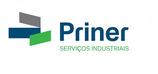

之前
因心理健康请病假的情况反复出现，却没人说得清原因。
之后
人力资源和管理者能及早识别信号，并有方法地开展第一次谈话，避免发展为病假或诉讼。
职业医学医生 · 研究者 · 作者 · 演讲人
场讲座 · 培训专业人士超过 1 万名 · 好评率 99%
年企业实践经验，覆盖矿业、钢铁、实验室及各种规模的机构
OMIS-R 在巴西 · 职业道德伤害量表的巴西葡萄牙语翻译与效度验证
《Quando o Trabalho Dói》 · 入围第七届 Ecos da Literatura 文学奖 · AssedioNet 出版社，2025
选择最接近您需求的起点。在初步沟通中，我会了解情况并推荐最合适的形式。
帮助团队提高意识，让管理层在心理健康、心理社会因素、NR-1 和疾病预防方面达成共识。
形式：面向活动、大会和大型团体的讲座，线上或线下均可。
了解讲座 → 需要更深入地处理某个情境？适合需要处理真实情境、拓宽倾听，并积累日常行动方法的小型团队。
形式：8 至 25 人的引导式活动，主题和对象与企业共同确定。
了解圆桌对话 → 需要让管理者准备好应对团队压力？适合希望更清晰、更有方法地预防和管理团队压力源的人力资源人员和管理者。
形式：SMCIT 问卷加一对一辅导，分两个环节。
了解管理者指导 →简单说说正在发生什么。在初步沟通中，我会了解情况并给出一个可行的方向，不预设每个需求都适合同一种服务。





Ana Paula 医生通过她的工作，引导我们思考：关爱员工，也是关爱组织和组织追求的成果，让成果以更健康、更可持续的方式实现。她的贡献拓宽了我们对建设更人性化、更健康工作环境的认识。作为人力资源经理，这种视角让我成为越来越清醒的管理者。
Ana Paula 医生把知识、伦理、原则和价值观，与一种深具人情味的分享方式结合在一起。她的教导改变了我的职业视角，坚定了我的使命感，也让我相信：凭借知识、敏感和对人们生活的真实影响，在组织中促进幸福感是可能的。
特地来感谢您的指导和发送的资料。相信它们会非常有用，帮助我们在这个过程中继续前进。非常感谢您的关注、时间和全部支持！
我读了报告，报告中信息的质量和丰富程度令我印象深刻。
自动滚动，鼠标悬停可暂停阅读左右滑动查看更多 →
您对这项事业的投入令人钦佩、鼓舞人心。为您的贡献感到骄傲，感谢您与我们分享您的见解！
医生，您的参与是这次活动成功的关键。这一刻带来的反响让我们都非常开心、很有成就感。期待更多行动、更多女性、更多非凡的经历！
祝贺您，Ana 医生！您卓越的专业能力和创新方法激励我们践行苏格拉底最宝贵的一课：'认识你自己。'
精彩的讲座和内容！
今天和您在一起非常愉快。能清楚感受到，您是全身心投入地在做这份工作。
就是最好的！很感激能认识这样一位走到哪里都带来改变的人和职业医学医生……太棒了！
感谢有机会聆听并向一位杰出的专家学习。
祝贺您的精彩访谈！您谈论同理心时清晰而鼓舞人心的方式让我印象深刻。您传达这一人类基本品质重要性的能力，确实令人钦佩。
您是我的榜样。我钦佩您的智慧、力量、尊重，以及为帮助他人而不断求知的精神。
因心理健康请病假的情况反复出现，却没人说得清原因。
人力资源和管理者能及早识别信号，并有方法地开展第一次谈话，避免发展为病假或诉讼。
NR-1 已要求企业管理心理社会因素，企业却不知道从哪里开始、该记录什么。
管理层获得共同语言和技术标准，能够支撑证据并规划下一步。
一个敏感案例（工作相关性、复工、冲突）因为害怕决策失误而停滞。
决策不再靠临场发挥：临床研判、风险梳理和书面建议。
结果因每个组织的情况而异。方法不变。

职业医学 · CRM-BA 12797 · RQE 7237 · 近 30 年从业经验 · 职业心理健康研究
我是 Ana Paula Teixeira 医生，职业医学医生、作者、职业心理健康研究者。近三十年来，我与不同规模和行业的机构合作，包括矿业、钢铁和实验室。
我毕业于巴伊亚联邦大学医学专业（UFBA，1996），是职业医学专科医生（RQE 7237），目前在 Escola Bahiana 攻读健康技术硕士，研究 OMIS-R 量表的巴西葡萄牙语效度验证。
在企业中，我分析心理健康、工作条件和管理决策相互交织的情境。我的重点是理清问题，并确定符合每个组织实际情况的下一步，而不是把不同的情境当作有同一个答案。
我著有《Quando o Trabalho Dói》（当工作伤人，AssedioNet 出版社，2025），入围第七届 Ecos da Literatura 文学奖，也是 ICOH、ABERGO 和 ANAMT/AMB 会员。我在阿拉戈伊尼亚斯长大，很早就在父亲的公司工作：我也从管理者的角度懂得一天工作的分量。
一份 27 页的指南（葡萄牙语），面向需要有方法地评估精神障碍与工作环境之间关系的专业人士。依据巴西联邦医学委员会第 2.323/2022 号决议和 NR-1。
免费领取指南 →
我研究工作中的道德创伤、道德伤害、道德勇气和道德韧性。在硕士研究中，我负责国际量表 OMIS-R 的巴西葡萄牙语翻译与效度验证，这一工具用于在不同组织环境中识别职业道德伤害。
这一领域帮助说清那些无法简单归为"压力""韧性不足"或"人际冲突"的经历：决策、指标、不作为或机构做法伤害了职业身份、信任和诚信。
工作中有些经历伤害的不只是日常，还有身份、信任和诚信。
职业道德伤害关注违背核心价值观工作、目睹不公或执行破坏信任的决定所带来的影响。
量表的效度验证丰富了技术工具，让工作中道德痛苦的研究更精确，少些临场发挥。
这一主题与心理健康、组织诚信、伦理领导力、复工和心理社会风险预防密切相关。
从互补的角度研究职场心理健康：职业病、女性声音、职业倦怠和灵性。均为葡萄牙语。
我的核心著作，关于职业病、组织文化，以及工作伤害个人和机构时那份看不见的代价。
了解本书 → 著作 Cinquenta e três formas de encontrar Deus（寻找上帝的五十三种方式，疫情之外）关于危机、灵性和个人成长的思考，源自疫情重新唤起的关于上帝、意义和穿越困境的追问。
在亚马逊查看 → 数字指南 Quando Ela Fala, Todo Mundo Ouve（当她发言，所有人都在听）写给希望在职场清晰表达立场的女性的实用指南，附有关于清醒、坚定而尊重的沟通的真实案例。
查看指南 → 电子书 Burnout: como proteger sua vida e seu trabalho da exaustão（职业倦怠：如何让生活和工作免于耗竭）关于耗竭的四个阶段、预警信号、寻求专业支持以及应对耗竭的保护路径的实用指南。
在 Hotmart 查看 →关于 NR-1、心理社会因素评估、领导力和职业健康的专业文章（葡萄牙语），每篇都注明官方来源。
问卷是强制的吗？需要心理学家吗？根据巴西劳动部发布的内容，看 NR-1 的要求。
阅读文章 → 评估与诊断 HSE-IT：如何衡量工作中的心理社会风险这一英国工具在七个维度上衡量什么、如何使用，以及如何处理结果。
阅读文章 → 评估与诊断 心理评估，还是心理社会因素评估？一个看人，一个看工作。NR-1 要求的是哪一个，以及为什么混淆的代价很高。
阅读文章 → 领导力与文化 职场中的乳腺癌：领导者的角色从第一次谈话到复工：管理者该说什么、需要了解什么，以及如何在不增加负担的情况下重新安排团队。
阅读文章 → 领导力与文化 我不是有毒领导：如何判断自己是不是让团队生病的领导方式有哪些信号，以及领导者开始看见它们后会发生什么变化。
阅读文章 → 职业健康与战略 CUIDAR 方法：从心理健康到战略的六个步骤从治理到复盘：每一步该交付什么、最常见的错误，以及 90 天计划。
阅读文章 →精选她在媒体、广播、电视、播客以及健康、管理和工作领域专业频道的公开亮相（葡萄牙语）。

A Tarde · 心理健康成为巴西企业的义务